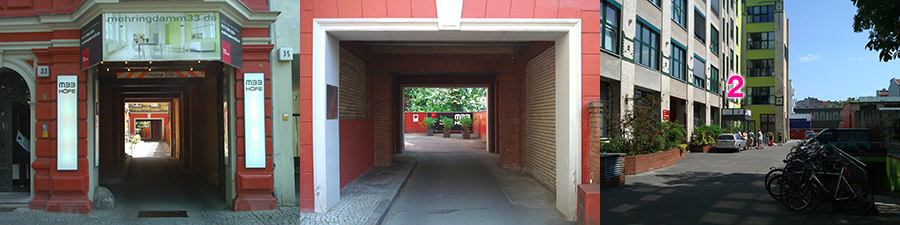

We’d like to dig deeper into a specific topic: client-side
JavaScript applications. Join us on May 10th, 7pm for a special
event hosted by Moviepilot.
There are plenty of frameworks which assist in building
JavaScript applications (“HTML5 apps”). Most of them lack best
practices and case studies regarding large-scale applications.
Especially, small libraries like Backbone.js are used for this purpose
without providing a scalable structure on their own.
To discuss these problems, we’re announcing apps.berlin.js,
the first meet-up on JavaScript Web apps in Berlin. There will be a focus on
Backbone.js and its ecosystem, but we’re going to discuss other libraries,
tools and development stacks as well.
If you would like to attend, please take a minute and register on meetup.com so we can estimate the number of participants. This is not mandatory, but helps us to organize enough soft drinks etc.
If you would like to give a talk or start a discussion, please let us know!
Chaplin – JavaScript Applications with Backbone.js
Mathias Schäfer (@molily)
An introduction to Chaplin, a field-tested application architecture on top of Backbone.js.
Chaplin establishes conventions on how to structure an application and addresses the requirements of growing JavaScript applications.
A Guided Tour Through the SproutCore Jungle
SproutCore is a Cocoa-inspired JavaScript framework for developing large-scale, desktop-grade web applications.
SproutCore has never gotten the attention from developers as Backbone did, and recently there has been much confusion about various versions and forks. This talk will guide you through this jungle and clarify for whom it’s worthwhile to take a closer look at what’s behind.
Wunderkit
Developers of 6Wunderkinder will talk about the challenges they faced when building Wunderkit, especially regarding Backbone.js.
Free Slot
Share your experience in developing JavaScript applications. For example, tell about your development stack, tools and libraries, or problems you faced and how you mastered them.
Your talk doesn’t need to be long. Lightning talks which spark a discussions are fine as well!
How to find the venue
This special event will take place at the Moviepilot
office at Mehringdamm 33,
Berlin-Kreuzberg – not at the co.up like the regular Berlin.JS meet-up.
If you go by underground or bus, get off at station Mehringdamm (U6, U7, M19).
Enter the M33 Höfe gateway, go straight through the court to the entrance marked
with a “2”. The office is located on the third floor on the right side.
The venue is basically wheelchair-accessible, but there are two steps at the entrance
which we plan to bridge. Please send us a
short notice if you’re a wheelchair user.
